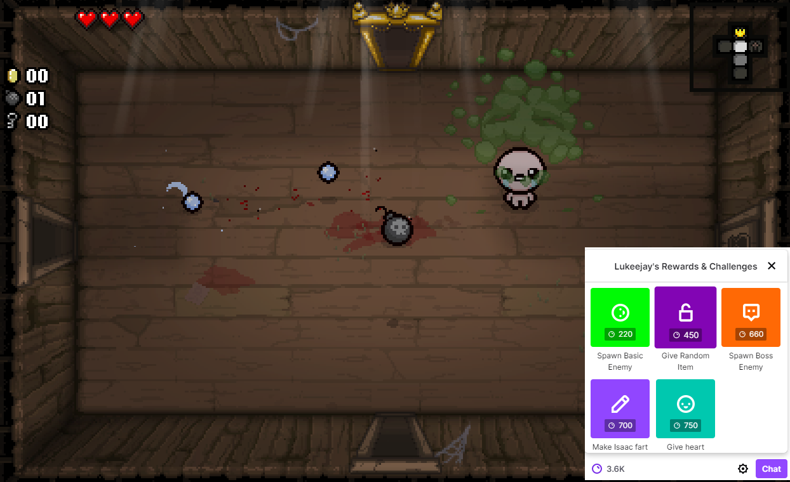

<mat-toolbar *ngIf=registeredWithTwitch>
  <h1>Binding Of Channel Points</h1>
  <span class="flex-expand"></span>
    <h3 *ngIf="user">{{user.displayname}}</h3>
    
</mat-toolbar>
<div *ngIf="registeredWithTwitch">
  <app-command></app-command>
</div>
<div *ngIf="!registeredWithTwitch">
  
  <h1 class="center-title">Binding Of Channel Points</h1>
  <a class="center" style="padding: 10px" mat-raised-button color="primary" href="http://localhost:3000/authenticate">Register with Twitch</a>

</div>

